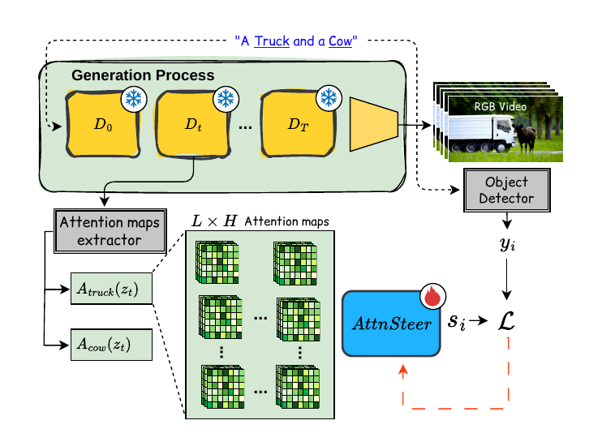
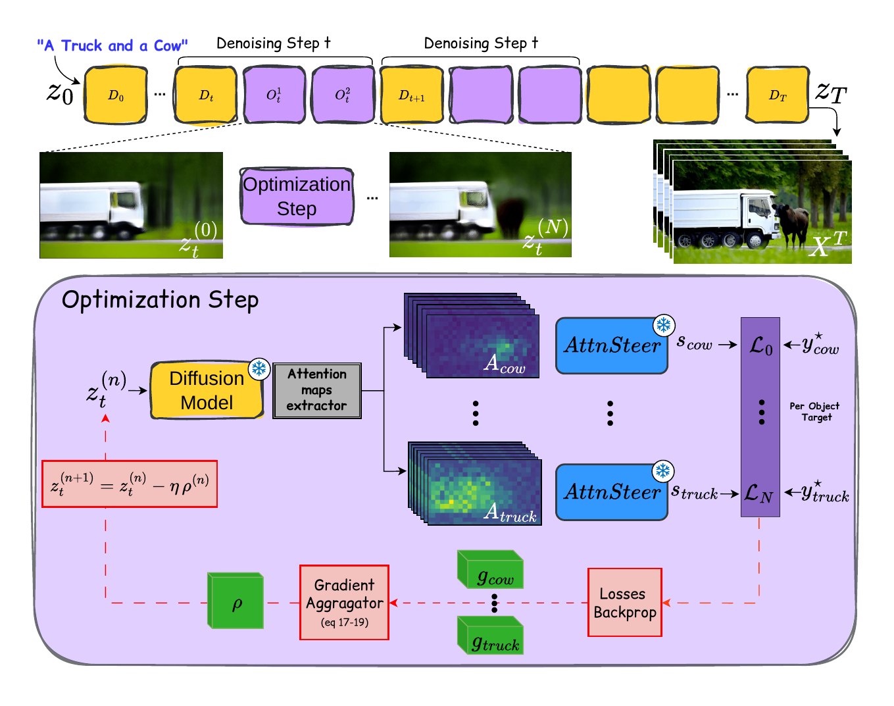
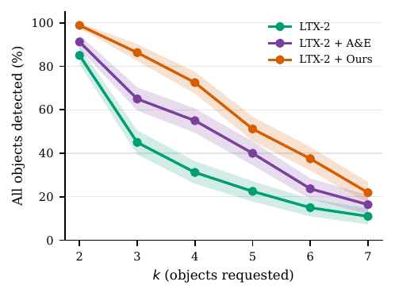
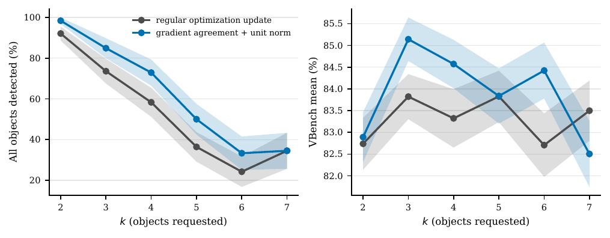

Text-to-video diffusion models generate increasingly realistic videos, yet often fail to render all objects requested by the prompt, particularly as the number of objects grows. Improving such fine-grained adherence through training requires substantial video supervision, motivating inference-time methods that steer intermediate diffusion latents. Existing approaches typically define hand-crafted objectives over cross-attention maps, relying on indirect attention statistics rather than whether the model ultimately renders a requested object.
We propose AttnSteer, a learned attention-steering model that predicts object rendering directly from intermediate cross-attention. AttnSteer is trained entirely on the generator's own trajectories using automatically obtained detector labels and contains only 37k parameters. At inference time, its predictions define differentiable objectives for steering object presence; the same framework also extends to frame-level temporal control. AttnSteer improves all-objects accuracy over the strongest baseline from 49.0% to 61.9% on LTX-2 and from 42.1% to 46.5% on Wan 2.1, and raises temporal specificity from 35.7% to 52.6%, at comparable video quality.
61.9%
All-objects accuracy, LTX-2
A&E 49.0% · unsteered 34.2%
46.5%
All-objects accuracy, Wan 2.1
A&E 42.1% · unsteered 33.8%
52.6%
Temporal specificity, LTX-2
TempoControl 35.7% · unsteered 31.2%
AttnSteer has two stages. First, we train a small probe to predict whether each requested object will be rendered, using per-step, per-layer, per-head cross-attention features from the frozen generator. Labels come from detectors run on the generator's own final videos, so no external video supervision is needed. Second, during sampling, the probe's prediction is used as a differentiable objective, and the video latent is optimized while the generator stays fixed.
For multi-object prompts, independent per-object updates can conflict. We normalize each object's gradient, anchor the update on the object least likely to be rendered, and suppress locally opposing contributions.


We evaluate on 473 short prompts with the extended VBench object benchmark. The table reports the detection ratio and the fraction of clips where all requested objects are detected, overall and by k, the number of requested objects. The gain grows with k.

| Model | Params | Res. | Det. ratio (%) | All objects detected (%) | Quality (%) | |||||||
|---|---|---|---|---|---|---|---|---|---|---|---|---|
| mean | k=2 | 3 | 4 | 5 | 6 | 7 | VBench | Photoreal. | ||||
| CogVideoX-5B | 5 B | 720×480 | 68.4 | 27.3 | 68.8 | 40.0 | 28.7 | 12.5 | 8.7 | 2.7 | 78.4 | 66.4 |
| Wan 2.2 (TI2V-5B) | 5 B | 1280×704 | 78.9 | 38.3 | 87.5 | 52.5 | 35.0 | 35.0 | 7.5 | 9.6 | 84.4 | 84.6 |
| LTX-2.5 (distilled) | 22 B | 512×512 | 62.1 | 17.5 | 45.0 | 16.3 | 17.5 | 11.3 | 8.7 | 5.5 | 86.9 | 90.3 |
| MiniMax-H3 | 33 B | 768×768 | 84.6 | 49.7 | 90.0 | 55.0 | 33.8 | 48.7 | 36.2 | 32.9 | 81.5 | 75.7 |
| Wan 2.1 (T2V-1.3B) | 1.3 B | 832×480 | 76.0 | 33.8 | 83.8 | 38.8 | 41.2 | 17.5 | 10.0 | 9.6 | 79.7 | 67.3 |
| + A&E | 81.0 | 42.1 | 85.0 | 56.2 | 52.5 | 30.0 | 23.7 | 1.4 | — | 48.2 | ||
| + AttnSteer | 84.1 | 46.5 | 90.0 | 63.7 | 45.0 | 26.3 | 32.5 | 19.2 | 78.6 | 46.5 | ||
| LTX-2 | 22 B | 512×512 | 77.1 | 34.2 | 82.5 | 42.5 | 33.8 | 20.0 | 16.3 | 8.2 | 83.9 | 52.5 |
| + A&E | 84.4 | 49.0 | 91.2 | 65.0 | 55.0 | 40.0 | 23.7 | 16.4 | 84.0 | 47.5 | ||
| + AttnSteer | 90.0 | 61.9 | 98.8 | 86.2 | 72.5 | 51.2 | 37.5 | 21.9 | 83.9 | 59.4 | ||
Bold = best within a backbone block; underline = best across the benchmark. Wan 2.1 rows are scored with 16-frame labels; all other rows use 32 frames. Wan 2.1 +A&E VBench is not yet measured. The A&E k=7 value for Wan 2.1 (1.4) is as reported in the paper and is under re-check.
LTX-2. The unsteered backbone misses or weakly renders the requested object, while A&E can distort it.
Requested objects are listed under each example. Red marks objects neglected by the unsteered backbone. AttnSteer recovers them while preserving the scene better than A&E.
Same protocol as above.
Unit-normalized gradient agreement improves object presence for k=2–6 over plain averaging of per-object gradients. The figure below compares the two rules.

The training labels and the main evaluation use the same detectors, so we re-score identical LTX-2 clips with each detector alone and with YOLOv10, which was not used in training or labeling. The relative gain over the unsteered backbone holds under every detector. Under YOLOv10, the Attend-and-Excite gain is not significant, while the AttnSteer gain remains large.
| Detector | Detection ratio (%) | Change vs. unsteered (%) | |||
|---|---|---|---|---|---|
| unsteered | + A&E | + AttnSteer | + A&E | + AttnSteer | |
| Three-detector majority | 74.4 ±1.0 | 82.2 ±0.8 | 87.6 ±0.7 | +10.5 ±1.8 | +17.8 ±1.8 |
| GRiT | 58.6 ±1.2 | 64.8 ±1.2 | 73.8 ±1.1 | +10.7 ±3.1 | +26.0 ±3.2 |
| Grounding DINO | 83.8 ±0.8 | 90.0 ±0.7 | 90.3 ±0.6 | +7.3 ±1.3 | +7.7 ±1.3 |
| OWLv2 | 72.0 ±1.0 | 77.9 ±0.9 | 83.3 ±0.8 | +8.2 ±1.9 | +15.7 ±1.9 |
| YOLOv10 (independent) | 27.6 ±1.0 | 27.9 ±1.0 | 32.9 ±1.0 | +1.0 ±5.0 (n.s.) | +19.0 ±5.6 |
The same learned objective applies frame by frame, so it can control when an object appears. On single-object prompts, where an object must enter at a prescribed time, AttnSteer raises specificity from 31.2% to 52.6%, meaning fewer frames before the requested onset are wrongly filled. Temporal alignment (t-IoU) rises from 40.6% to 45.0%, and VBench quality is unchanged (74.7 vs. 75.1).
| Model | Single object (n=80) | Static + dynamic (n=82) | ||||||||||
|---|---|---|---|---|---|---|---|---|---|---|---|---|
| Prec. | Rec. | Spec. | F1 | t-IoU | R@0.5 | Prec. | Rec. | Spec. | F1 | t-IoU | R@0.5 | |
| LTX-2 | 55.9 | 78.9 | 31.2 | 58.6 | 40.6 | 37.5 | 86.4 | 77.1 | 54.1 | 83.0 | 67.4 | 78.7 |
| + TempoControl | 57.7 | 80.9 | 35.7 | 60.5 | 41.8 | 37.5 | 87.1 | 80.5 | 53.7 | 83.1 | 70.8 | 81.7 |
| + AttnSteer | 63.8 | 68.1 | 52.6 | 62.5 | 45.0 | 45.0 | 87.2 | 84.1 | 52.2 | 85.5 | 74.5 | 85.4 |
Validation AUROC of the per-step steering probes. Each denoising step has its own predictor, so each row is the step whose cross-attention is read.
| Step | LTX-2 | Wan 2.1 |
|---|---|---|
| 0 | 80.0 | 78.2 |
| 1 | 81.7 | 79.1 |
| 4 | 87.4 | 84.8 |
| 7 | 89.9 | 87.3 |
| 10 | 91.2 | 89.1 |
| 15 | 92.1 | 90.1 |
@inproceedings{anonymous2027willitrender,
title = {Will It Render? Learned Attention Steering for Object Presence in Text-to-Video},
author = {TODO},
booktitle = {Proceedings of the IEEE/CVF Winter Conference on Applications of Computer Vision (WACV)},
year = {2027}
}